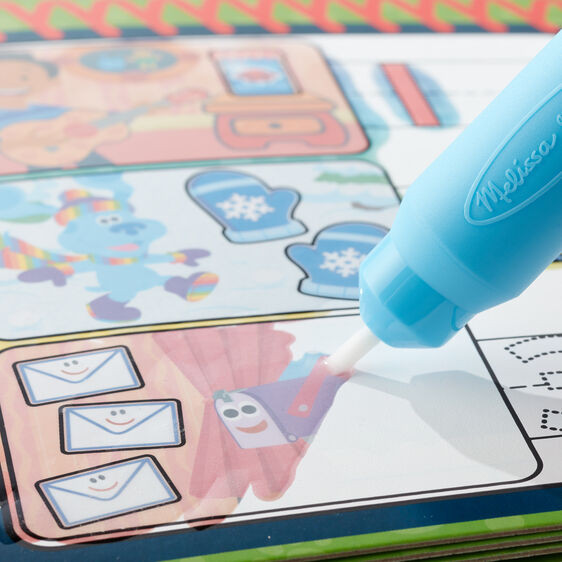
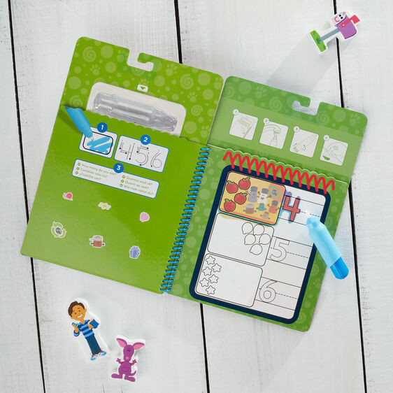
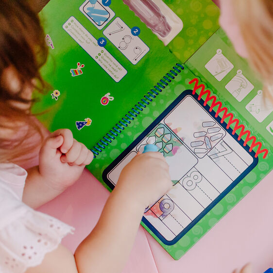

Blues Clues Water Wow - Counting
Paw Patrol and Blue Clues
R135Practice writing numbers with Blue and friends with 4 counting-themed reusable boards and refillable water pen Reusable pages are white when dry, reveal colors when wet; search and find activities on each page Makes a great gift for preschoolers, ages 3 to 5, for hands-on, screen-free play Ages 3+ Chunky-size water pen is easy to fill, easy to hold, stores in pad; compact, spiral-bound format - great for travel Blueâs Clues & You! promotes kindergarten-readiness, inspiring confidence, empowerment, and kindness in preschoolers as they develop their problem-solving, social, and developmental skills through play Conforms to ASTM D-4236.
Enquire about this product



Blues Clues Water Wow - Counting at Kids Corner KZN
Blues Clues Water Wow - Counting is part of our Paw Patrol and Blue Clues collection. Kids Corner KZN stocks toys for learning, pretend play, creative play, gifting and everyday childhood discovery in South Africa.
Browse more Paw Patrol and Blue Clues toys